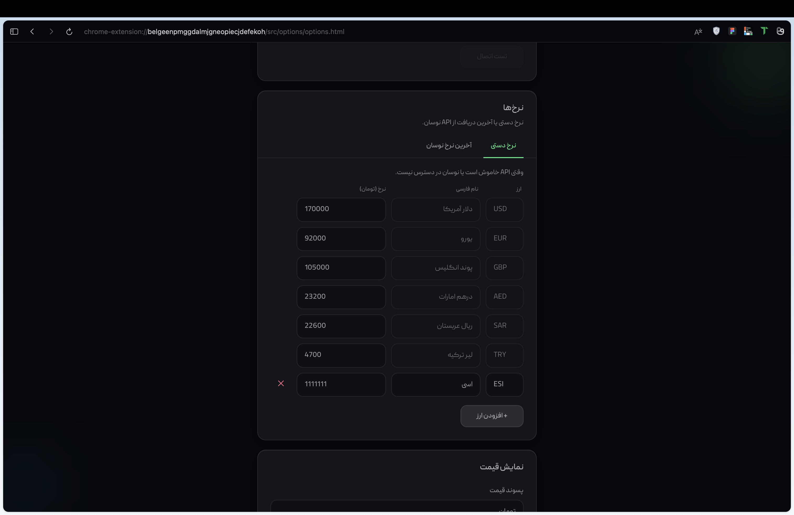
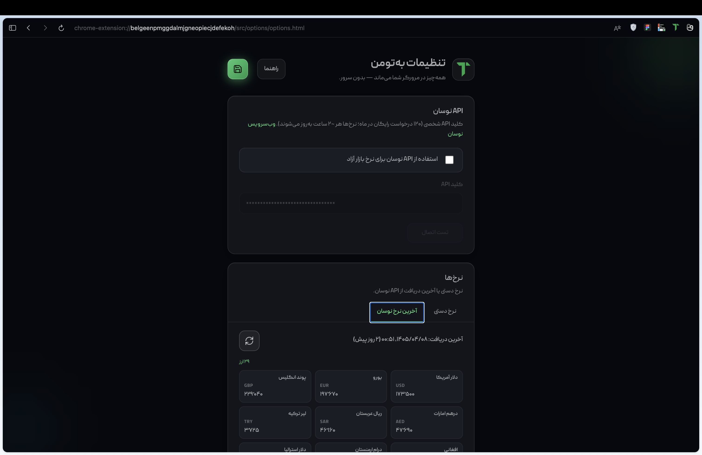
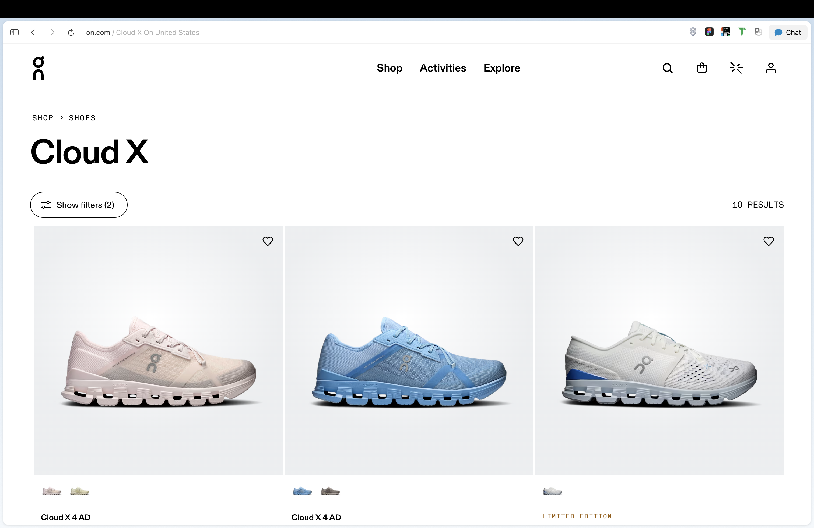
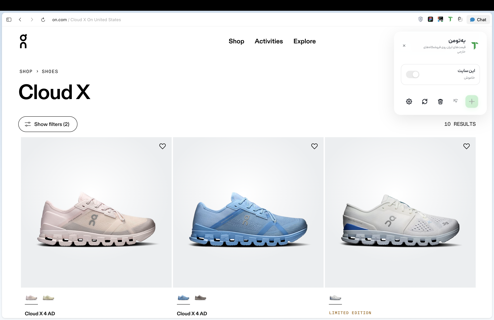
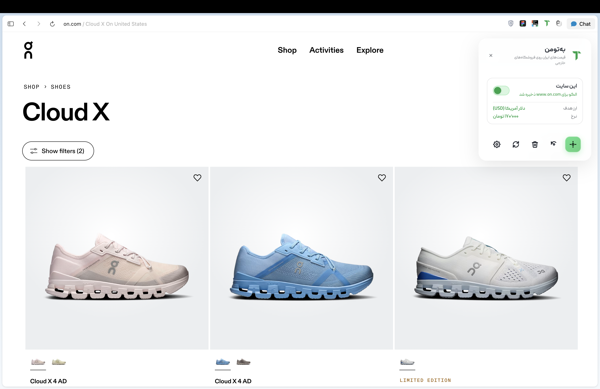
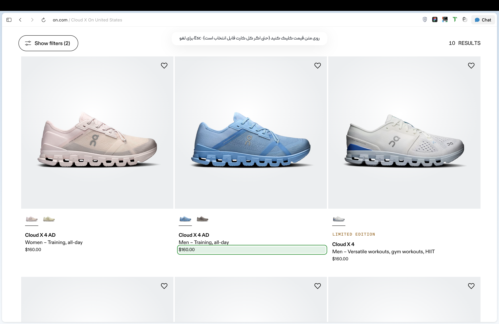
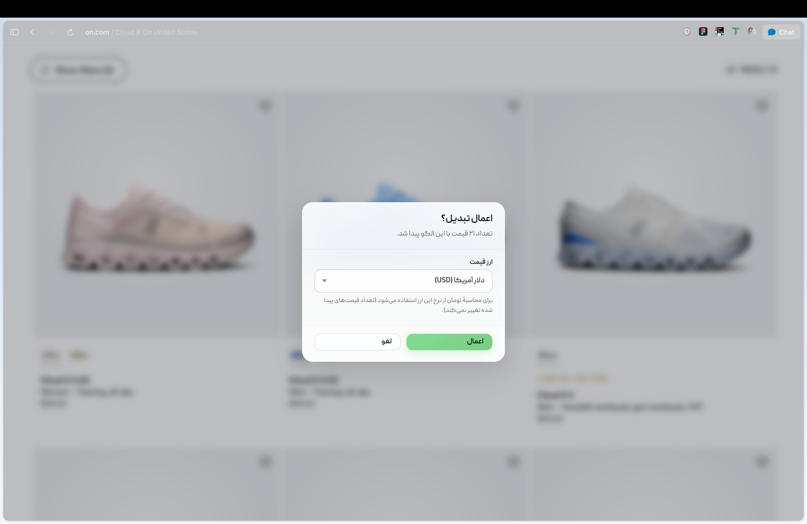
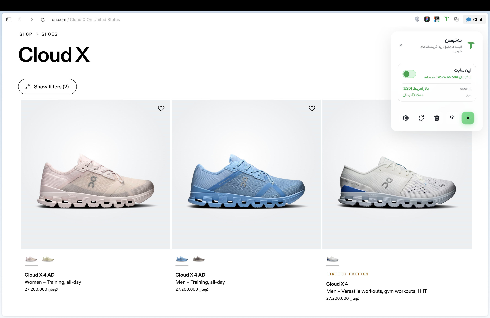
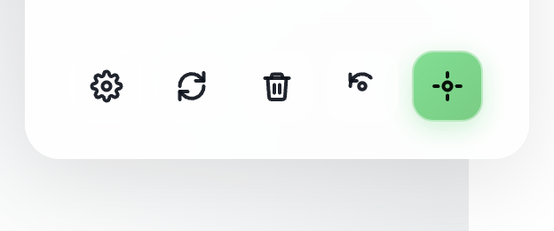

راهنمای بهتومن
تبدیل قیمت فروشگاههای خارجی به تومان — گامبهگام
بهتومن چیست؟
افزونهای برای مرورگر کروم که قیمتهای سایتهای خرید خارجی را با نرخ بازار آزاد به تومان نشان میدهد. همهچیز در مرورگر شما اجرا میشود — بدون سرور بهتومن.
قبل از شروع — تنظیم نرخ
حداقل یک بار نرخها را در صفحه تنظیمات مشخص کنید.
-
۱
نرخ دستی
در تب نرخ دستی برای هر ارز (مثلاً دلار، یورو، لیر) مقدار تومان به ازای یک واحد را وارد کنید. این نرخها وقتی API خاموش است یا در دسترس نیست استفاده میشوند.

اسکرینشات تنظیمات07-settings-manual-rates.pngتب نرخ دستی — وارد کردن نرخ تومان برای هر ارز -
۲
API نوسان (اختیاری)
برای نرخ خودکار بازار آزاد، API نوسان را فعال کنید و کلید API خود را از بات تلگرام @navasan_contact_bot وارد کنید. سپس تست اتصال بزنید.

اسکرینشات تنظیمات08-settings-navasan.pngفعالسازی API نوسان و وارد کردن کلید -
۳
دکمه ذخیره (آیکون دیسکت) را بزنید تا تنظیمات ذخیره شود.
استفاده روی سایت فروشگاه
برای هر سایت فقط یک بار قیمت را انتخاب میکنید؛ بعداً خودکار اعمال میشود.
-
۱
باز کردن پنل
به صفحه فروشگاه بروید و روی آیکون بهتومن در نوار ابزار مرورگر کلیک کنید.

اسکرینشات نوار ابزار01-extension-icon.pngکلیک روی آیکون بهتومن 
اسکرینشات پنل02-panel-open.pngپنل شیشهای در گوشه بالا-راست صفحه -
۲
روشن کردن این سایت
سوئیچ این سایت را روشن کنید. تا وقتی الگوی قیمت ذخیره نشده، وضعیت «انتخاب قیمت» را نشان میدهد.

اسکرینشات پنل03-panel-toggle-on.pngفعالسازی تبدیل برای همین دامنه -
۳
انتخاب قیمت
دکمه انتخاب قیمت (آیکون هدف سبز) را بزنید. نشانگر صلیبی ظاهر میشود — روی متن قیمت کلیک کنید (مثلاً $135 یا 27,03 TL)، نه روی کل کارت محصول.
- برای لغو: Esc
- اگر لینک نامرئی روی کارت است، روی خودِ عدد قیمت بایستید

اسکرینشات انتخابگر04-pick-price.pngهاور و کلیک روی متن قیمت — قیمت با حاشیه سبز مشخص میشود -
۴
تأیید و اعمال
در پنجره تأیید، تعداد قیمتهای پیدا شده را ببینید. در صورت نیاز ارز را از منو عوض کنید (فقط نرخ تبدیل عوض میشود، نه تعداد قیمتها). سپس اعمال را بزنید.

اسکرینشات تأیید05-confirm-dialog.pngدیالوگ تأیید — انتخاب ارز و اعمال الگو -
۵
نتیجه
قیمتهای مشابه روی صفحه به تومان تبدیل میشوند. در پنل، ارز هدف و نرخ فعلی را میبینید. الگو برای همین سایت ذخیره میشود و دفعه بعد خودکار اعمال میشود.

اسکرینشات صفحه فروشگاه06-converted-prices.pngقیمتهای تبدیلشده روی لیست یا صفحه محصول
دکمههای پنل
- انتخاب قیمت — شروع انتخابگر برای سایت جدید یا اولین بار
- انتخاب دوباره — تعویض الگوی قیمت روی همین سایت
- فراموش کردن سایت — حذف الگوی ذخیرهشده و بازگردانی قیمتهای اصلی
- بهروزرسانی نرخ — دریافت مجدد نرخ از نوسان (در صورت فعال بودن API)
- تنظیمات — باز کردن صفحه تنظیمات افزونه

09-panel-toolbar.png
نکات مهم
- روی صفحات سبد خرید و پرداخت تبدیل خودکار غیرفعال است.
- برای فایلهای محلی (file://) در جزئیات افزونه «دسترسی به آدرسهای فایل» را فعال کنید.
- اگر قیمت درست تشخیص داده نشد، روی خود متن قیمت کلیک کنید یا «انتخاب دوباره» بزنید.
- خاموش کردن «این سایت» قیمتهای اصلی را برمیگرداند.
- پس از بهروزرسانی افزونه، یک بار آن را از chrome://extensions ریلود کنید.